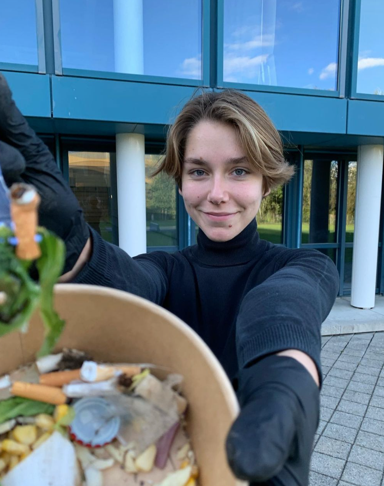
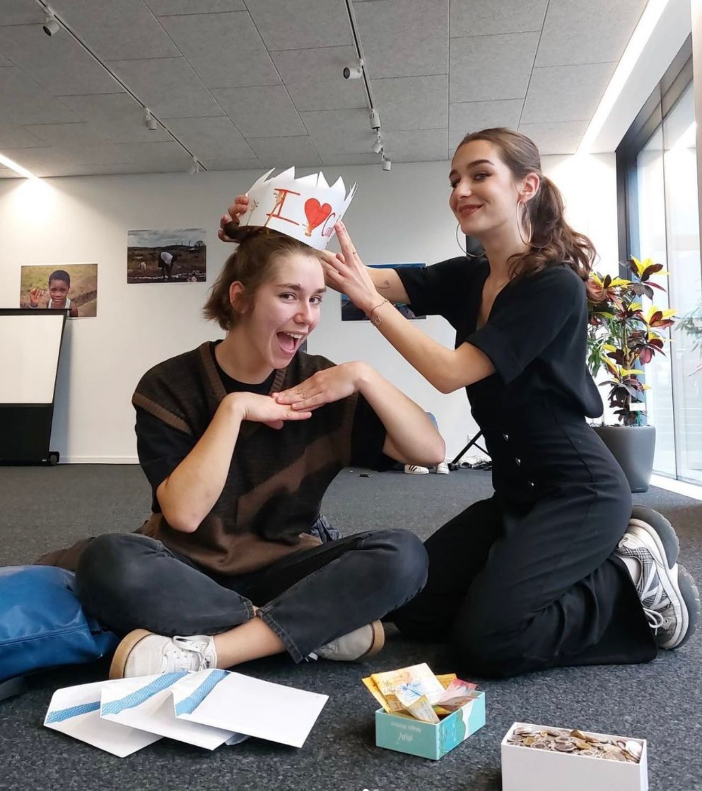

La Cleanwalk a pour but de nettoyer les alentours du collège, afin de limiter la pollution et de garantir la propreté de l’extérieur. Toujours dans la bonne ambiance, nous nous séparons en petits groupes pour couvrir le terrain et partons ramasser les déchets. Les professeurs de chimie ont la gentillesse de nous prêter des pinces. Armé de leurs gants et sacs poubelle, le comité candide et les participants entament la récupération de toute sorte de choses :
Des mégots de cigarette, des petits papiers, des débris de verre, des bowl de la cantine encore pleins, des stylos et même des fourchettes !
Finalement, on peut remplir un bon sac poubelle de tous ces déchets que certaines personnes laissent derrière elles par accident ou pas (on espère que les fourchettes c’était une erreur…)
Grâce à ça, les alentours du collège sont propres !
N’hésitez pas à nous rejoindre pour les prochaines éditions de la Cleanwalk ! C’est fun, utile et un bon coup de propre ne peut faire que du bien !

Tu as envie de participer à la vie étudiante du CSUD en agissant pour des causes qui te tiennent à coeur ? Tu veux passer un bon moment avec nous, ou tu es simplement curieux.se de savoir ce que nous faisons durant nos réunions ? Alors n’’hésite pas et viens avec nous tous les mercredis à 12h30 en salle de réunion ou contacte-nous via Instagram (@candide_csud), on se réjouit de te voir mercredi prochain !
